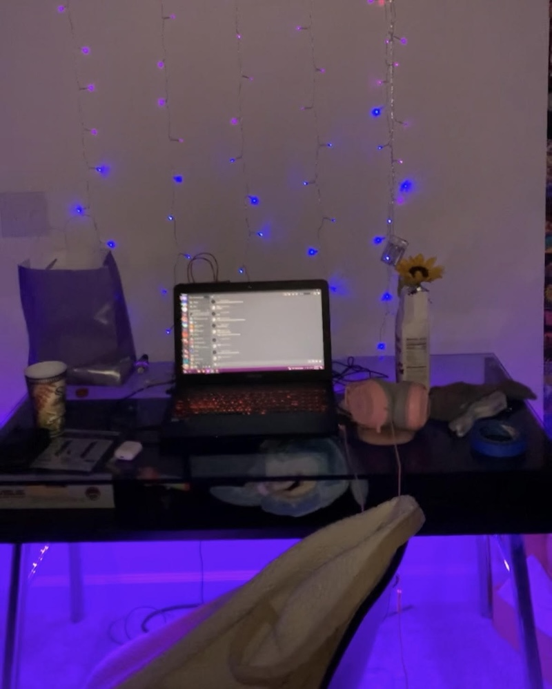
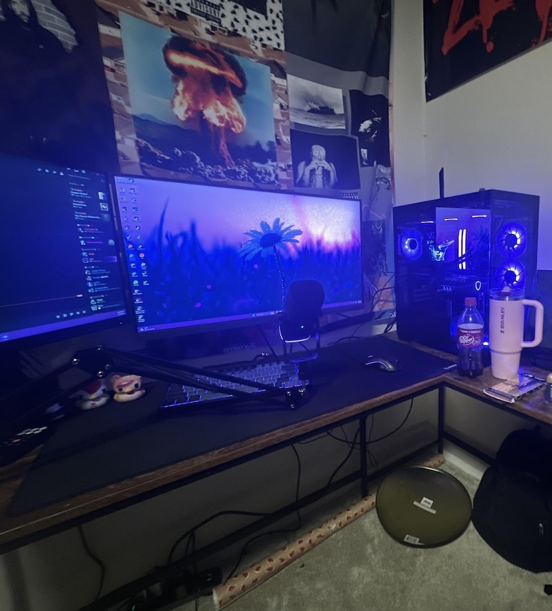

Home
Building computers is something that most people are usually afraid to do by themselves out of fear of breaking parts. Imagine spending thousands of dollars and messing something up. After having experience in building computers I have gotten over that fear and offer to build computers for other people. I help people make the computer they want with the components they need. I have people buy the parts and I assemble it for them. I occasionally also help people find the best parts for their needs.
What I Do
- Put together your dream PC
- Help you pick out parts for your needs
- Get you the lowest price on parts
- I have fun doing it

About Me
I am a 19 year old college student who has a passion for building computers. It's a fun hobby I can work on for myself and others. I have built two computers for myself and have been commissioned a few times to build computers for friends. Building computers is something that keeps me up to date with the world of computers. My favorite part of doing this is that I can talk about what I have built and have a physical item to be proud of. Building computers is something I find therapeutic and very interesting. It feels like intricate legos!

I like to say my PC is my pride and joy. I tend to center myself around computers; so this isn't just my hobby, it's who I am. Not only is my computer my pride and joy, I tend to make sure everyone I know takes as good care of their computers as I do mine.
When I Can Build
The best part about this hobby is that I can build a computer at any time or day. The only times I can't are when I'm busy or I don't havbe the parts! There are times where building a computer isn't recommended, though.
When I don't recommend building:
- Depending on supply and demand, computer parts can get ridiculously expensive.
- You can't afford to build parts and price to performance doesn't match what you need.
- Directly before new hardware launches is a bad idea because prices could go down or you might want the performance boost.
GPU Price Checker
Estimated Price: $300
Best Places
There's surprisingly specific needs for the location that building computers is the best place for.
Does your location fit the requirements?
If you can check all the boxes, you have a perfect enviroment for building a computer! I find that the dining room is the best option to fit the location requirements.
How to Build a Computer!
This is probably the part that you may have anticipated the most! Building a computer is rather easy. Like I have said in previous parts of my page, it's like building intricate legos! Once you have met all the requirements for parts and location, the fun part starts-building the computer!
Simplified Steps to Building:
- First, place the motherboard on its box to ensure a non-conductive space.
- Next, install the CPU.
-
Install the RAM into the proper slots!
- Note: Check which slots your RAM should be in (Should be in motherboard instructions).
- Install the SSD.
- Install the CPU cooler.
- Then, prepare the case!
- Install the motherboard into case.
- Install the PSU.
- Connect the cables for already installed parts.
- Next, (The best part) install your GPU!
- Plug in cables to the GPU.
- Don't forget to manage your cables.
-
Finally, check if it boots. If it does, you just successfully built
a computer!
- Note: Make sure you turn the PSU on before trying to power it on. I may or may not have forgotten to do that once or twice.
Check out this YouTube tutorial!
Why I Build Computers
Building computers was an interest I found way down the road of my hobby of computers. I had originally gotten into computers because I had been playing video games since I was able to hold a controller. I found that playing video games was something I enjoyed more than most things. The video games I found interest in soon developed to only being available on the computer. My dad got me a gaming laptop when I was eight years old. That laptop lasted me until I was 16. Once video games became too big for my laptop, I wanted to get the best price to performance and built my first computer. My hobby and passion went up from there.


AI Prompts
- How do I make a PC part price checker?
- How to show only one section of single page website?